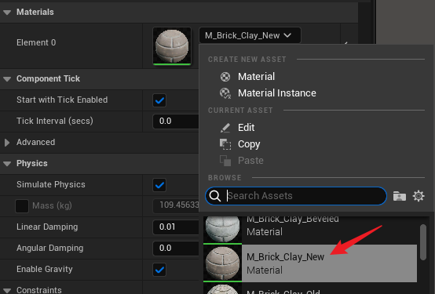
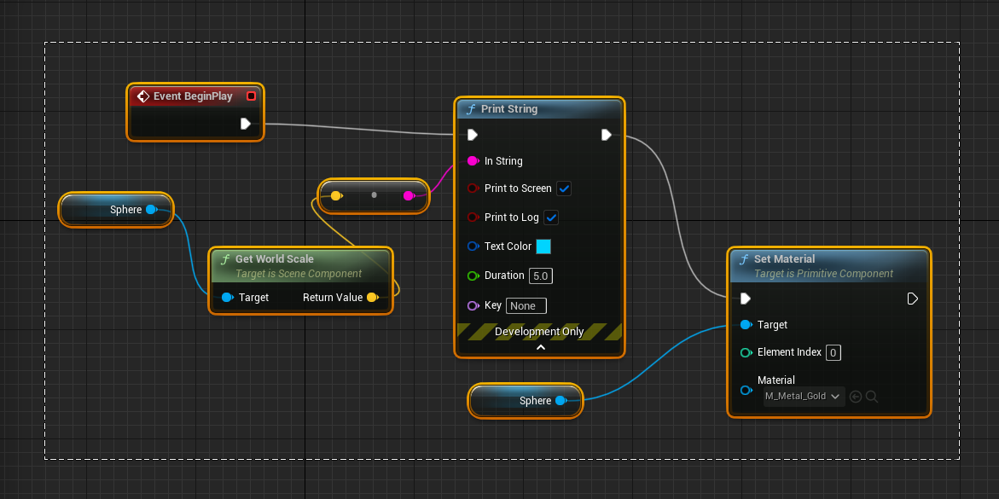

blueprints初级教程-1-崇礼v3
Max的课程对设备有各种要求. 所以, - 建议准备一个 Pad, 用Pad看教程, 用Mac或者PC实际操作.
- 英文不太好的同学, 不建议学习本课程.
|
1. 项目最终结果演示
2. 安装和打开Unreal Engine 5
- √安装和打开Unreal Engine 5; 创建一个名为LearnBP的项目。


3. 创建一个Blueprint

下面将按照图示在Blueprints文件夹中中添加一个Blueprint; 取名BP_Test; 父类设置为Actor; 并双击打开进行编辑。 |
- 右键点击 Blueprints 文件夹, 然后按照下图选择 Add/Import Content, 再选择 Blueprint Class.
- √选择 Actor作为这个 Blueprint的父类.

- √把新建的 Blueprint 改名为 BP_Test.

- 在文件夹中双击 BP_Test 打开这个蓝图进行编辑。
- 把 BP_Test 标签页(tab)拖到ThirdPersonMap旁边。
给BP添加一个球体.
- 在 Components 下面选中BP_Test; 点击Add; 输入sphe; 从提示中选择Sphere; 别选成 Sphere Collision 了.
- 添加 Sphere 之后, Components 下面是这样 ↓
- 切换到ThirdPersonMap; 把BP拖到ThirdPersonMap中.
4. 修改BP
- 设置BP的大小。点击 BP_Test 标签, 回到BP_Test蓝图界面; 选中Sphere; 找到Details标签; 把Scale的(x, y, z)的值都设置为0.5。这样能够把球体变小。
- 在 Details 中找到 Simulate Physics(模拟物理), 勾选.
- save; compile
- 回到地图, Play, 这时的球应该可以踢了。
5. Event Graph
- 找到 BP_Test 的Event Graph 标签, 点击. 在画布的空白处按下鼠标右键, 可以拖动整个画布。
- 删除事件 Event BeginPlay. (Ctrl + Z 可以撤销删除).
- 添加事件的方法: 右键点击空白处, 搜索要添加的事件node. 也可以移动node.
6. BeginPlay事件研究
- 对于BP_Test, 一旦我们开始游戏, 就会执行这个Event BeginPlay事件. 对于新出生(spawn)的actor, 也会在spawn时候触发这个事件.
对于BP_Test, 一旦游戏开始Play, 就会执行Event BeginPlay事件. 对于新出生的actor, 也会在出生时(spawn)触发这个事件. |
Print String, 下面的任务是在游戏界面上打印"您好!".
- 参考下面的图示, 从Event BeginPlay的引脚拖出一根线;
- 搜索Print String动作(action)并选择;
- 把 In String 参数设置为您好!;
- compile save ;
- 切换到Map中去执行.
如果我们在地图中放置多个BP_Test, 会多次打印您好!。 |
- 在Map的Outliner中找到添加的BP_Test, 按delete键删除它们.
Get World Scale
- 在Details中查看 Sphere 的 scale;
- 把Sphere拖到编辑器中; 从引脚中引出Get World Scale;
- 连接 Return Value 和 In String;
- 展开Development Only, 将持续时间(Duration)设置为5.0秒.
注意这个 Event Graph 是属于 BP_Test 的. Get World Scale是从Sphere引出的, 因此它的意思是获得 Sphere 在 World 中的 Scale |
- compile save. 到地图中Play. 这是一种很好的调试方法。
7. 更改BP的材质(Material)
- 选中Component中的Sphere,
- 在Details中导航到Sphere的材质(Material);
- 更改其材质为M_Brick_Clay_New;
- 在Map中查看更改效果; 用ctrl+z把材质再改回BasicShapeMaterial。

Set Material
- 回到Event Graph, 我们来用脚本改变材质.
- 接上图, 在Print String之后, Set Material ↓
8. Construction Script
Construction Script相当于构造函数。在 construction script 中也可以更改Sphere的材质。 construction script类似构造函数. 可以预先做出蓝图的实例.
- 在Even Graph中框选Blueprint代码; ctrl+c复制; 拷贝到Construction Script的画布上.

- 依照下图改造一下这个BP; Save; Compile.

- 观察. 发现不用开始游戏, 在编辑器中球就变成金黄色的了。但是看不到Location的三维坐标的显示.
- 打开Output Log, 拖动Sphere的时候, 可以观察到其坐标的改变.
Construction Script的作用是, 可以预修改Asset的一些属性, 而不是在游戏开始后修改。一个用途是: 让金色的球在空间随机分布; 或者让草木在庭院中随机分布。 |
9. Event Tick
- Tick事件每帧都会执行. 计算机每秒钟一般能运行30到300帧, 这就是帧率(FPS, Frame Per Second)。执行Tick事件需要时间, 因此为了保证游戏的流畅度, 最好只是在必要的时候才使用Tick。
- 查看游戏的FPS(Frame Per Second).
10. Text Color -- 显示有色彩的文本.
Random Array Item
- 按住 Text Color 前面的引脚, 往左边拖动 ↓
Make Array
- 设置颜色
- 点击下图所示的方框,
- 设置颜色的Value,
- 设置饱和度(Saturation).
- 点击 Pin, 再增加两个元素; 并设置好颜色和饱和度.
- 连上Event Tick。Compile, Save。Play。
- 使用cmd强制把FPS设为5. 可以看到输出Hello的速度明显慢了很多。而且游戏的流畅度感觉也差了很多.